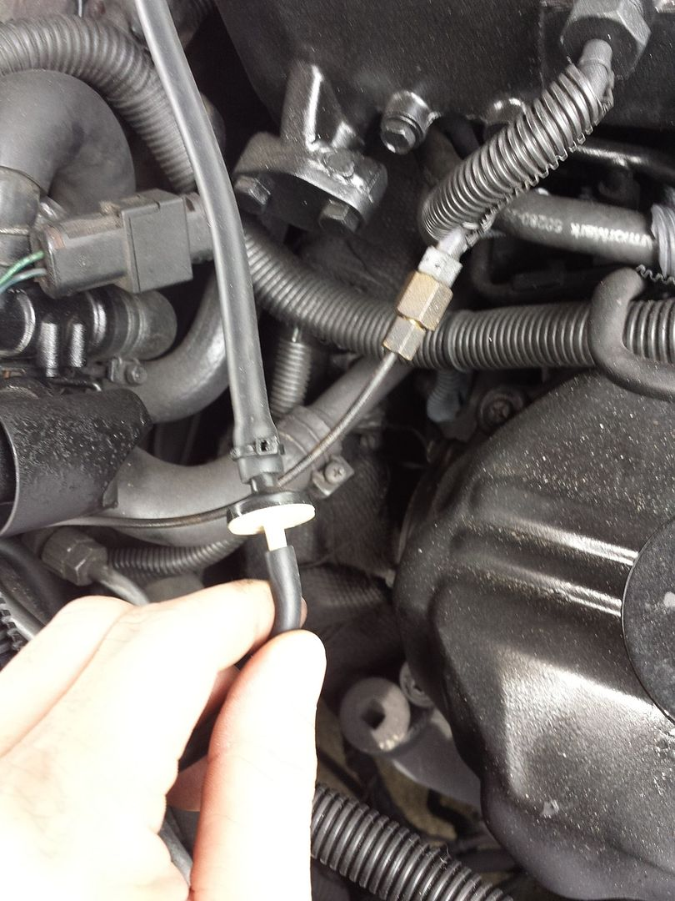

-
Too hot for this!!!!!!
My blower to my AC just quit. I do have digital climate control. If i push the manual defrost button the blower goes full blast, but that is heated air not cooled air fro the AC. None of the AC control buttons make the fan do anything. Some one said its the Fan control amplifier, which i have looked for high and low. I did find one for $109.00...... Is there any way to fix or rebuild this one? and for that, does this seem like the right solution to the problem? -
I see you haven't gotten any replies yet. I don't have the digital climate control, so can't offer much more than sympathy - I live just down the road, and know what you mean about hot… I did have to replace the blower control amplifier, but mine was totally dead. I think that the defrost should go through the AC evaporator if you have control over the damper. It uses it (along with the heater core) to dehumidify the air in your car to defog the windshield. You can block off the water flow to the heater core from the engine for the next few months so at least it won't pick up heat. Suggest downloading the FSM if you haven't already. Sounds like your problem may be the control unit itself, but that's just a guess.'86 NA - original owner (1986-93) and final owner (2005-present)
My build thread: http://z31performance.com/showthread…-Got-mine-back
-
Another Texan (near Dallas) here. If you look under the dash up by the gas pedal, you can see the actuators. If you can squeeze the top two actuators closed, it should close the door to the heater core and the door to the defrost to redirect the air back to the vents. This may or may not help you, if the compressor isn't running you won't be cooling the air. At least you will be getting something out the vents. It is too hot for that mess. Good luck.
FSM can be found at http://www.xenonz31.com/reference.html -
So thanks to this post I got up under my dash yesterday…I'm in Miami and I almost have to park the car for the summer 'cuz the heat's so brutal. Sick and tired of AC quirks.Originally posted by Getmoreram View Post
Sure enough, I pinched the top actuator and AC comes out "Face" (you actually have to close the top two). I know the right way to do this would probably be to run a new vacuum line directly from the vacuum pump to these actuators, but I wanted a quick fix.
First I disconnected the springs to the actuators.
Then I disconnected the actuator mounting screws. That left them somewhat dangling, but made compressing them a little easier.
Then I used tie wraps to jerry-rig them into compression.
I turned on the ignition switch and tested it…sure enough, no matter what mode I selected (face, defrost, bi-level) the air came out "Face"!
....then I took it for a test drive....
So, it's not quite as bad as before, there is a slight improvement but…as soon as I start to go into boost the AC seems to reduce a bit…it doesn't come out the defrost anymore, it still comes out the face vents, just not as strong.
Then as soon as I let off the gas it comes back full force.
Something is still "actuating" inside the unit…something that isn't controlled by one of those three actuators above the gas pedal.
So bottom line, some improvement but not 100%.
P.S. Gawd I hate working upside down under the dash…what a PITA. -
Needs a check valve to keep that vacuum in your hvac system when you hit 0 psi or boost.
I did this on my na2t and good ac for over a year.
Located in orlando fl.http://z31performance.com/showthread…2-2-(-now-NA2T
My build thread (: -
You know, I was thinking about that…I'm gonna give it a try, thanks brother…do you have a specific one you used? (And maybe a link if you're feeling generous!) -
It's a small one way vacuum valve that's found in the help section. I'll try and get a pic for you later.http://z31performance.com/showthread…2-2-(-now-NA2T
My build thread (: -
Your primary concerns for replacing vacuum lines are going to be the ones coming off the tank. Specifically the one going to the water cock and the one going inside the cabin (also the one from the plenum). The one going into the cabin connects to a T under the passenger side dash up by the transmission tunnel. Mine was easy to get to. I connected the new hose to the old one with a connector and pulled it through the firewall with no problem. I rerouted the lines along the top, instead of back down by the frame like the originals. Once those are new, you can start narrowing down the likely culprits. I think there is a check valve in the vac tank that may be bad on mine, I lose the vents to the defrost under hard acceleration. I have been thinking about putting a check valve in like stated above. -
http://z31performance.com/showthread…2-2-(-now-NA2T
My build thread (: -
Nice..thanks…while I'll be ecstatic if that solves the problem, I'll be irritated I didn't try it sooner!

Copyright © 2006–. All rights reserved. Privacy Policy